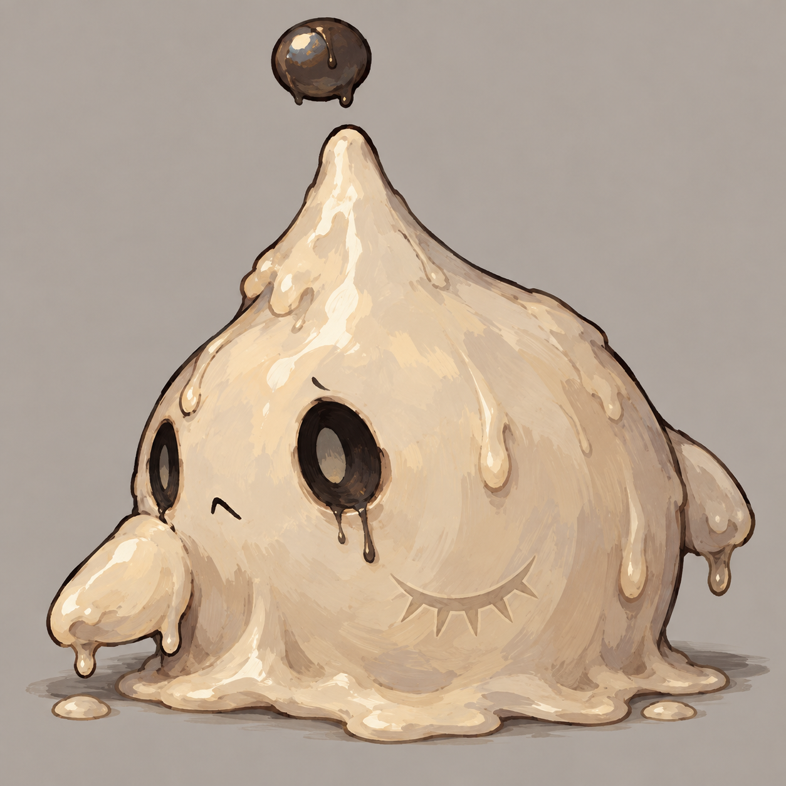
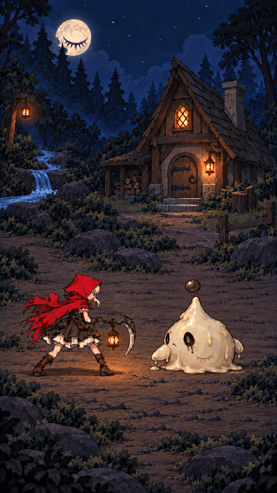
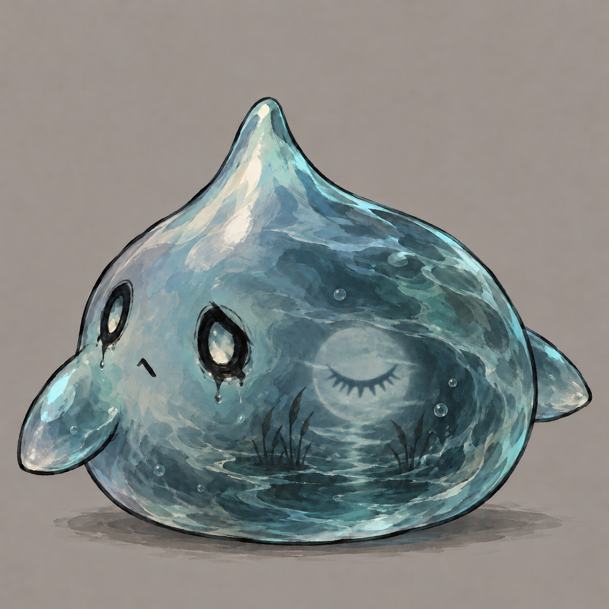
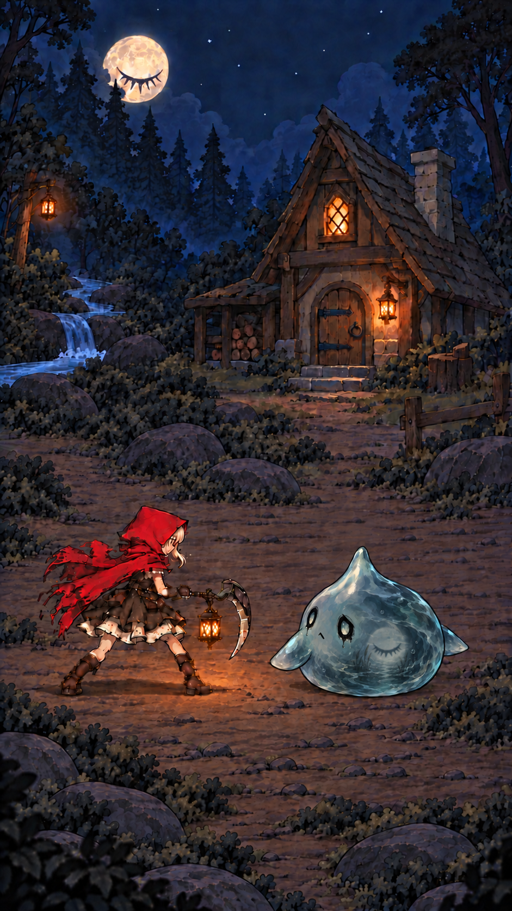
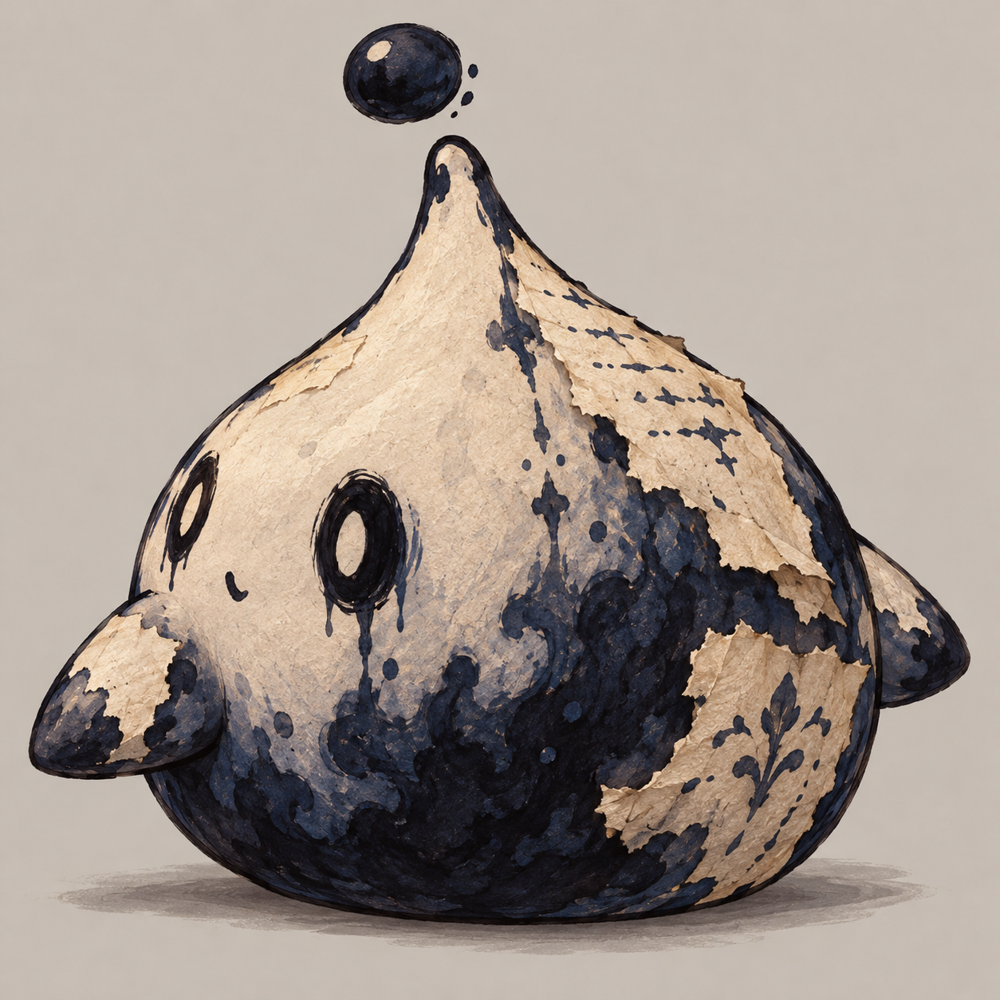
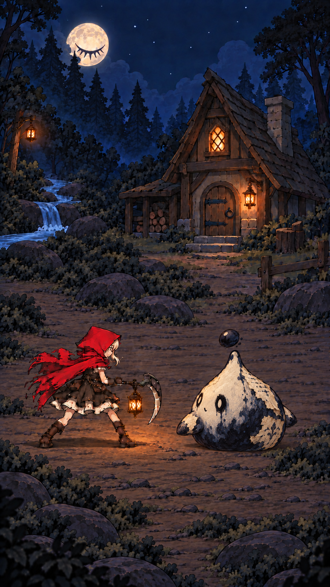

B 已选定用于水边，移除悬浮顶珠，保留水滴躯干与双鳍。A/C 保留为历史备选。下方统一使用节点 4「溪畔小屋」战斗构图。点击图片查看原图。
已选 B · 溺月水团（无顶珠 · 虚化闭眼月） · 概念效果图，非 Unity 实景
旧象牙蜡 · 空眼蜡泪 · 闭眼印

轮廓最清晰；软蜡适配压扁、弹射。

烟蓝溪水 · 虚化闭眼月 · 无顶珠

呼应溪畔环境；重点验证透明感。

湿纸浆 · 蓝黑墨腹 · 残缺故事

纸墨反差鲜明；纸边需适配网格。
